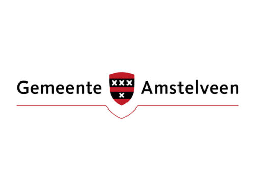
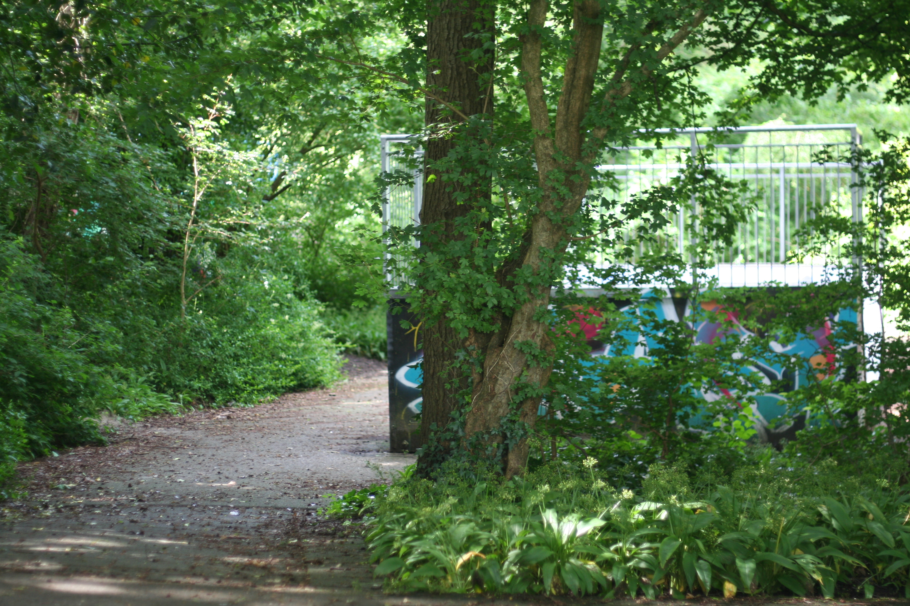
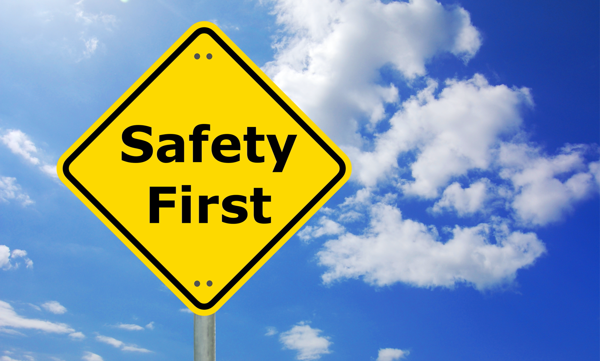
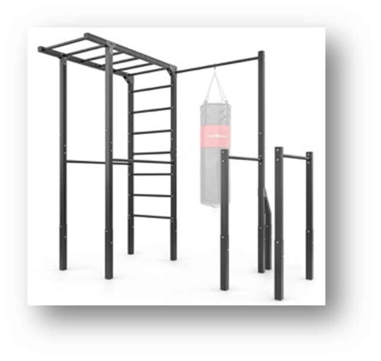
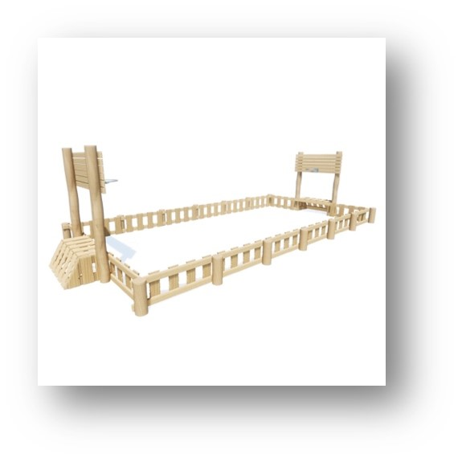
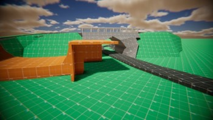
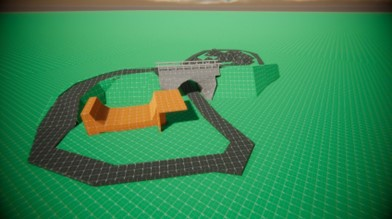

We begonnen eerst een groepje maken. Iedereen schreef zijn sterke punten op een papiertje,
en we plakte het rond de lokaal. We gingen toen dan een papiertje zoeken waar je zelf dan nodig heb.
Zoals, ik heb goed met computers, maar slechter in schrijven en formuleren.
Ik zoek dan een blaadje waar schrijven op staat en ik ga vragen of we dan in een groepje samen mag.
We kwamen uit eindelijk met het groepje: Stijn, Thom, Jakob en Kevin.

Het begin
We begonnen met een opdrachtgever zoeken, en we kwamen op de gemeente Amstelveen.
We kregen de project, een skatepark naast stadshart vernieuwen en groener maken.
Daar mee begon ons onderzoek.
Onderzoek
Wat is passend bij de buurt
In de buurt van dit skate-park zijn er voetbal velden, basketbal velden, naast het skate-park is er ook een basisschool en een kinderopvang.
Dit stukje is ook best groen omdat er veel planten en bomen zijn. Achter het skate-park is een speeltuin voor jonge kinderen.
In de buurt van het skate-park zijn er veel plekken voor andere activiteiten, dus ons lijkt het een goed idee dat deze locatie een skate-park blijft.
Er komen ook nog vaak mensen die daar skaten. Dit hebben we gehoord van klasgenoten die in de buurt wonen.
Ze gebruiken meestal alleen de halve pipe en bijna niemand gebruikt het deel dat uit asfalt is gemaakt.
Het lijkt ons dus een goed idee om iets te doen met de asfalt heuvels die bijna niet gebruikt worden.
Je kan meerdere dingen doen om een speeltuin te vergroenen. Wat je kan doen is asfalt of beton vervangen door planten.
Het liefste hekken of gras en niet te veel bomen. Dit is omdat het donker wordt door te veel bomen. Dit geeft een minder goede atmosfeer.
Wat ook goed zou helpen bij vergroening is een insecten hotel. Een insecten hotel zorgt ervoor dat insecten beter kunnen leven.
Hierdoor bevorder je de biodiversiteit.
Een andere optie om de speeltuin te vergroenen zijn houtsnippers. Ze hebben meerdere voordelen ze kunnen water opzuigen,
houden de grond vochtig, beschermt planten tegen vorst, ze zijn ook milieuvriendelijk en verzachten de val.
Een andere mogelijkheid om een speeltuin te vergroenen zijn houten speeltoestellen in plaats van metalen.
Deze zijn duurzamer en zorgen ervoor dat de speeltuin er groener uitziet.


Veiligheid
Volgens het Warenwetbesluit attractie- en speeltoestellen (WAS) moeten de materialen en de constructie stabiel zijn.
Ook moet er bescherming zijn tegen vallen en beknelling. Dit staat in de Nederlandse variant NEN-EN 1176-1:2017.
Onder artikel 1 in de WAS staat dat de speeltoestellen alleen door zwaartekracht of fysieke kracht van de mens mogen werken.
Mechanische en elektrische krachten worden niet toegestaan.
In bijlage 1 van de WAS staat dat het toestel veilig afgesteld en onderhouden moet kunnen worden.
Bij het ontwerpen en vervaardigen van een toestel moet je niet alleen uitgaan van een normaal gebruik van het toestel,
maar ook van het redelijkerwijze te verwachten gebruik daarvan.
Daarnaast moeten we rekening houden met specifieke het specifieke gedrag van kinderen en de ergonomie van de toestellen.
Tussenevaluatie
We hebben onze concepten en ons onderzoek gepresenteerd aan onze opdrachtgever.
Wij en onze opdrachtgever zijn tot meerdere conclusies gekomen toen ze naar onze concepten heeft gekeken.
Pannakooi
De pannakooi is niet zo een goed idee gebaseerd op ons onderzoek.
Dit is omdat er al meer dan 3 in de omgeving zijn.
De opdrachtgever heeft verteld dat de functie van de speelplaats niet veranderd mag worden.
Dit is omdat de buurtbewoners hiermee ontevreden zouden kunnen worden. Dus er mag alleen maar iets toegevoegd worden.
Fitness apparaten
Hiermee heeft de opdrachtgever eigenlijk al meteen het fitness concept afgewezen.
De opdrachtgever heeft ook gezegd dat er voor een fitness plek meestal een eigen ruimte wordt gemaakt.
Omdat er (zoals in ons onderzoek staat) speciale regels voor gelden.
Bijvoorbeeld een bepaalde soort vloer en allemaal andere veiligheidsmaatregelen.
Asfalt heuvels weghalen en water afvoer
Onze opdrachtgever heeft gezegd dat het asfalt wegvrezen geen optie is.
Dit is omdat 10m2 rond de €10.000 kost. Dus in plaats van de heuvels kunnen er geen nieuwe skate toestellen komen.
Maar de opdrachtgever heeft wel gezegd dat de skate-drains een goed concept zijn.
Om de slechte toestand van de asfalt heuvels te veranderen wil de gemeente het vaker gaan onderhouden.
Dus de opdrachtgever heeft de skate-drains goedgekeurd en is van plan om de asfalt heuvels beter te gaan onderhouden.
Half-pipe en chill-plek
De half pipe uit elkaar trekken en daartussen meer skate toestellen plaatsen is geen mogelijkheid omdat de half-pipe in de bodem verankerd is.
Maar een chill-plek bij de half-pipe maken is wel een goed idee. Dit is omdat er te weinig chill-plekken zijn in de gemeente voor jongeren.
De opdrachtgever heeft gezegd dat een chill-plek afgelegen moet zijn van huizen zodat er geen overlast is.
Dit is die in dit geval door de dikke laag bomen die om de speeltuin heen staan.
Brug
De opdrachtgever vindt ook dat de brug veel te lelijk is en zich in een slechte toestand bevindt.
Ze heeft gezegd dat als er een veiligheid inspectie zou komen de brug hem waarschijnlijk niet eens zou overstaan.
Dus de randen van de brug vervangen is noodzakelijk.
De opdrachtgever vindt het ook een goed idee om de brug professioneel te laten spuiten door een graffiti spuiter.
Daarna moet de gemeente er een beschermlaag over doen zodat de graffiti kan worden schoongemaakt.




Eindproduct
Na de trade of matrix en onze tussen evaluatie konden we van onze concepten een eindproduct gaan maken. We hadden vooral uit onze tussen evaluatie heel veel informatie gekregen. We hebben deze informatie naast de concepten gehouden en gekeken naar of alles nog mogelijk en realistisch was. Dit bleek echter bij veel dingen ook niet het geval te zijn en dus hadden we nog erg veel werk te doen.
We zijn na alle informatie die we hebben gekregen gegaan voor de chill plek bij de half pipe. De half pipe blijft staan en de chill plek word hier aan bevestigt. De chill plek is een container met 2 open kanten en aan 3 kanten bankjes. Ook word hier een prullenbak bij bevestigt zodat de jongeren hier hun afval in kunnen gooien.
Voor plek 2 (de skate heuvels) gaan wij niet veranderen maar juist verbeteren. We houden de heuvels zoals ze nu zijn maar ze gaan wel worden gerenoveerd. Dit doen we zodat het weer mogelijk is om er op te skaten en het dus weer aantrekkelijk word voor mensen om te komen. Tegen het probleem van het niet weglopende water hebben we de skate drain. De skate drain is een put waar je overheen kan skaten. Deze kunnen in de kuilen worden geplaatst zodat het water wegloopt. Ook is het de bedoeling dat de plek beter word onderhouden zodat dit ook aantrekkelijk blijft.
Voor de brug blijven we bij ons originele idee. We gaan de relingen vervangen om het mooier en veiliger te maken. de brug word door een professionele gratifieer bespoten. Hier doet de gemeente een laag overheen zodat dit ook zo blijft. En als er andere graffiti over geen gaat dit makkelijk kan worden weggehaald zonder de originele laag te beschadigen
In het algemeen gaan we de plek dus weer aantrekkelijk maken door de skate heuvels te renoveren en verbeteren. De half pipe word aangevuld met een chill plek en de brug word weer mooi en veilig gemaakt. Het is de bedoeling dat de plek ook beter zal worden onderhouden door de gemeente om de plek aantrekkelijk te laten blijven.